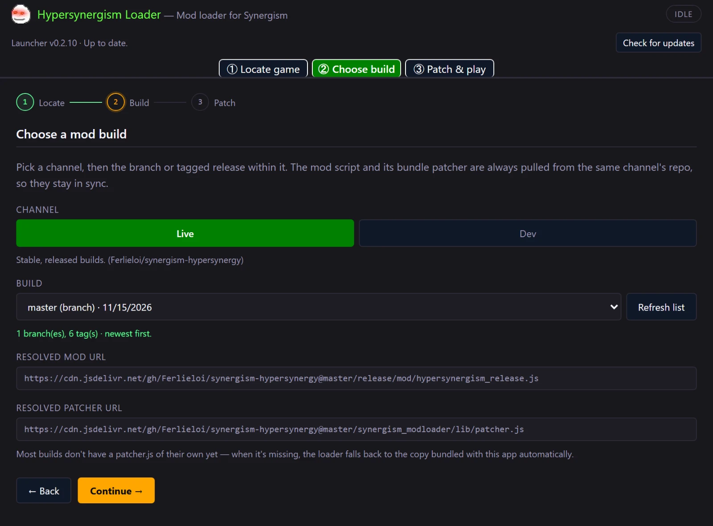

Wiki / Installation & updates
Choose the browser userscript or the Windows Steam loader. Both patch the game before loading the mod. A patch step that can't be applied is reported once at load, with details in the Log tab.
Step by step: Installation guide .
Loads Hypersynergism automatically with the game.
Where: Tampermonkey → install the Live bridge userscript
Install Tampermonkey, allow user scripts in Chrome-based browsers, then install src/loader/tampermonkey-bridge.user.js from Live. Works at synergism.cc and pseudo-corp.github.io/SynergismOfficial/. Reload the game after installing. Availability & limits The two game addresses have separate saves. The game's GitHub Pages address has no login, cloud saves or purchases. Retries loading when Tampermonkey starts after the game.
Where: Settings → UI → Reload when the loader starts late
The browser bridge can reload up to three times, then shows a message asking you to refresh. Disable automatic retries to see the refresh message immediately. Availability & limits Tampermonkey/browser only; this does not retry unrelated network or patch failures. Related settings: Reload when the loader starts late
Patches a copy of the Steam game and launches it with the mod.

Where: GitHub Releases → Hypersynergism Loader
Choose the installed game and a mod channel/build. Patch & launch prepares the copy; Launch only and Quick switch reuse it when compatible. The loader can update itself and detects when a game, patcher, injector or patch format change requires re-patching. The current loader bundles its extraction tool; a separate full 7-Zip installation is not required. Availability & limits Windows only. Re-patch when requested; reloading the mod alone does not update an already patched Steam copy. Choose between the Live and Dev repositories.
Where: Browser loader configuration / Steam loader build selection
Live is Ferlieloi's repository (Ferlieloi/synergism-hypersynergy). Dev is Shewchou's repository (maenhiir/synergism-hypersynergy). In the browser bridge, change the repo owner only when intentionally switching channels. Steam also supports selecting builds; development has a local loader. Live is generally more stable. Keeps a legacy loading path and shows how to switch to Tampermonkey.
Where: Legacy bookmark / Tools migration notice
The bookmarklet loads after the game starts. A migration window provides installation steps and the bridge script to copy. Availability & limits Bookmarklet loading is not recommended: it lacks direct game access, has slower fallbacks, and cannot support every feature reliably. Marks a newer version with a rainbow icon border and a panel-title notice.
Where: Mod icon / panel title / Tools → CHECK VERSION
Checks at load and every 30 minutes until a newer version is found; CHECK VERSION runs a manual check. Live follows stable version tags. Dev follows its own development builds and separately notifies about newer Live releases. Reload the game to pick up the latest build from the selected channel. Source: version-check.md
Sources for this category: tampermonkey-bridge.user.js · loaders.md · README.md